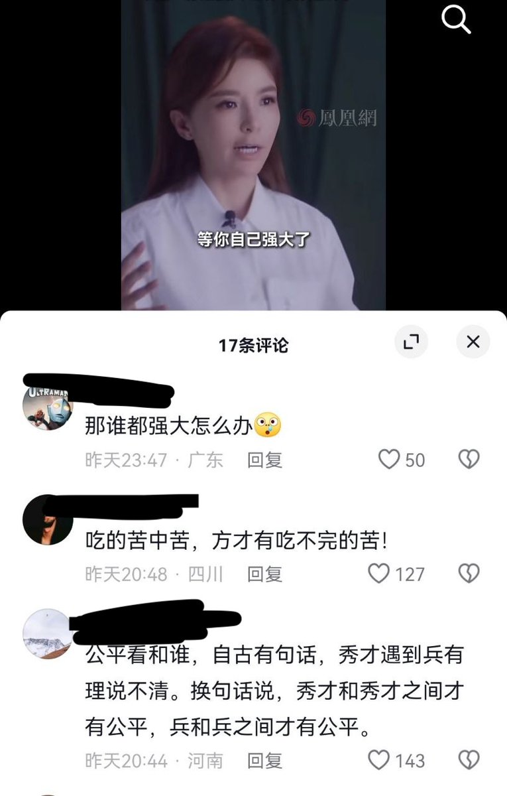

月影独下
@tadatsukiei
@whyyoutouzhele 请问社达和公平有一毛钱关系吗？

李老师不是你老师
@whyyoutouzhele
近日那尔那茜高考经历引发争议的同时
央视主持朱迅又开始灌鸡汤：“什么不公平，你越强大，世界对你越公平。等你强大了再跟世界说不公平的事吧。世界对你不公平就是为了让你更强大”
“你以为天大的事，等你强大了，那不过是一片云而已”
听起来好像是鼓励奋斗，但有网友质疑：“那要是所有人都强大了呢？” https://t.co/b1ZCT7svyS https://t.co/wK5VYJrQWX